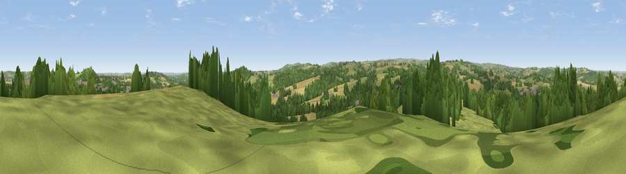

Viewpoint near Silkstone Common
#19904 in England · top 30% of its area beats it · near Silkstone CommonWhere it is
The exact computed spot (SE 30025 04875). Click the marker for map links.
The view, rendered

A 360° render of this exact spot computed from the terrain model, tree cover and land cover — summer colours, afternoon light, calibrated against photographs of famous viewpoints. Real trees, hedges and buildings will differ in detail.
The panorama
Grey silhouette: terrain skyline in each direction (720 bearings, Earth curvature and refraction included). Dashed green: skyline with trees (+15 m) and buildings (+8 m) as obstacles. Blue strip: how far the ground is visible on each bearing.
Where the view opens
Wedge length = distance to the farthest visible ground on that bearing (vegetation-aware). Rings at 10, 25 and 50 km.
What fills the view
37% woodland · 33% grassland · 22% cropland · 7% built-up
Angular shares of the visible panorama (visual magnitude), not map area. Landscape diversity 0.55 (0–1 Shannon).
Key numbers
More beautiful places nearby
The staircase of upgrades: each row has a higher view potential than everything closer. Driving times are estimates from straight-line distance, calibrated against real road routing — check an actual route before setting out.
| Place | Direction | Drive | Score |
|---|---|---|---|
| Viewpoint near Hood Green | SE · 2 km | ~6 min | 53.8 |
| Viewpoint near Hoylandswaine | W · 4 km | ~9 min | 72.7 |
| Viewpoint near Green Moor | SSW · 6 km | ~13 min | 73.1 |
| Viewpoint near Wharncliffe Side | S · 8 km | ~17 min | 75.0 |
| Viewpoint near Wharncliffe Side | S · 9 km | ~17 min | 75.2 |
| Viewpoint near Greenfield | W · 30 km | ~47 min | 76.0 |
| Viewpoint near Carrbrook | W · 31 km | ~49 min | 77.1 |
| Viewpoint near Otley | NNW · 41 km | ~60 min | 77.5 |
53.53967, -1.54842 · source: screening · position refined by local search. Computed location — check access rights before visiting.